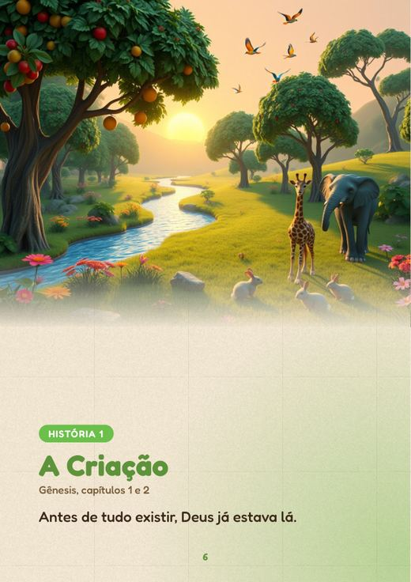
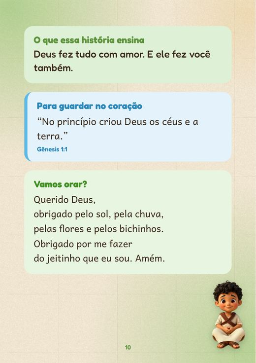
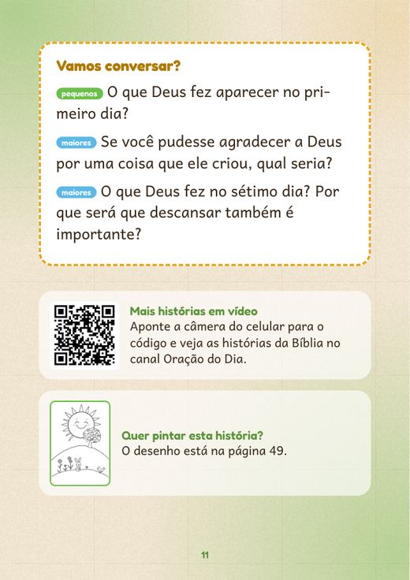
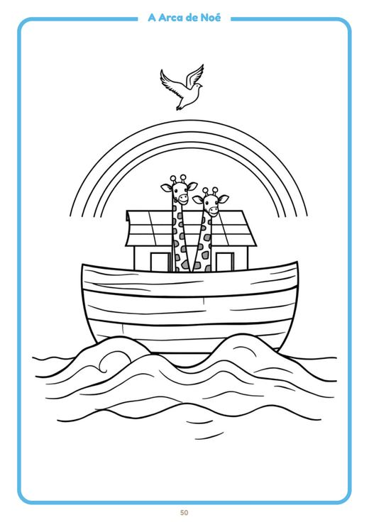
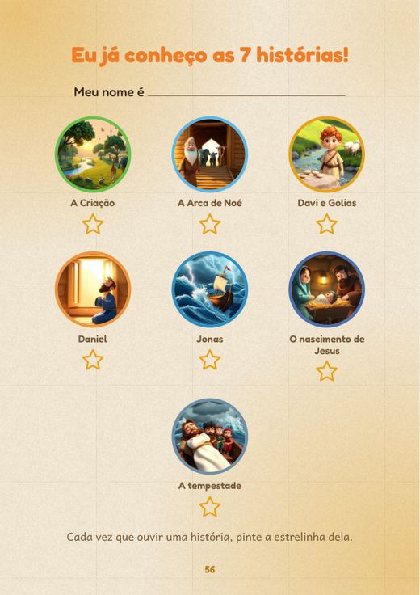
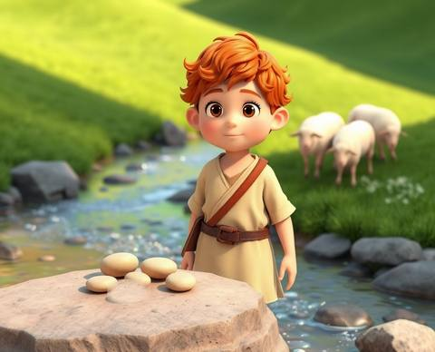
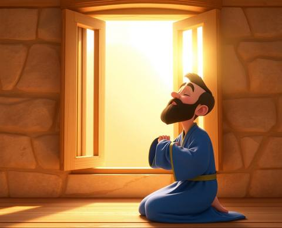
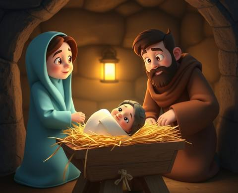
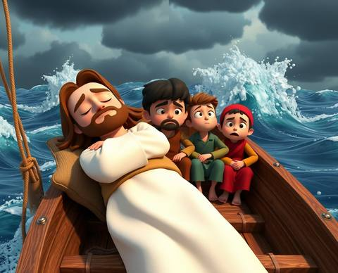
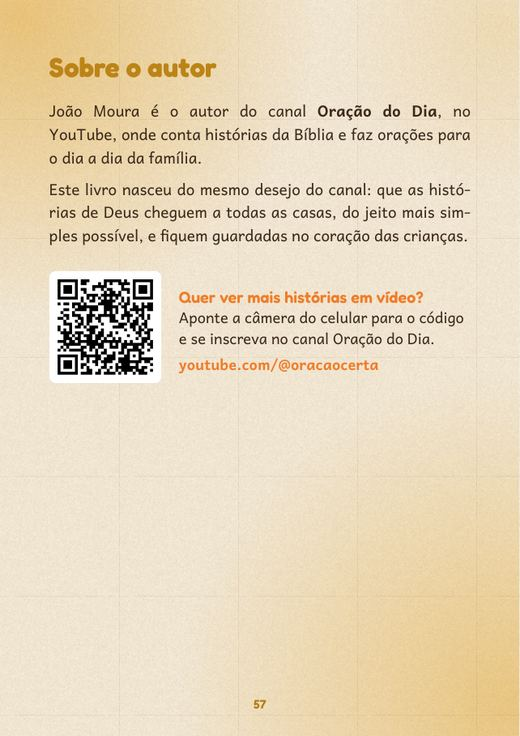

As 7 histórias mais lindas da Bíblia para crianças
Para ler junto antes de dormir, com palavras simples e sem mudar o que a Bíblia diz.
R$19,90
Preço de lançamento até 30/11. E-book em PDF de 58 páginas coloridas, que chega na hora no seu e-mail. Garantia de 7 dias.
Quero as 7 históriasAs histórias do livro, com o lugar de cada uma na Bíblia:
- A CriaçãoGênesis 1 e 2
- A Arca de NoéGênesis 6 a 9
- Davi e Golias1 Samuel 17
- Daniel na cova dos leõesDaniel 6
- Jonas e o grande peixeJonas 1 a 3
- O nascimento de JesusLucas 2
- Jesus acalma a tempestadeMarcos 4
O preço de lançamento acaba em .
Você quer que a criança conheça Deus, mas a noite chega rápido
O dia foi longo. Na hora de dormir, a criança pede mais uma história, e você queria que fosse uma história de Deus.
Só que a Bíblia de adulto tem palavras difíceis para os pequenos. E inventar na hora, sem saber se está contando certo, dá insegurança.
Aí a noite passa, e a conversa sobre Deus fica para amanhã.
Você não precisa ser professora de catequese nem de escola bíblica
Para plantar a fé, basta ler junto. O livro já traz a história contada do jeito que a criança entende, e você só precisa abrir a página e ler com ela no colo.
Cada história mostra o livro e o capítulo da Bíblia de onde veio, para você conferir na sua Bíblia sempre que quiser.

Por que é tão difícil fazer disso um costume
Palavras de adulto
A Bíblia foi escrita para todo mundo, e algumas passagens são longas e difíceis para quem tem 5 anos. A criança se perde no meio.
História que muda
Alguns materiais infantis acrescentam detalhes que não estão na Bíblia. Aí você fica sem saber o que é da história e o que foi inventado.
Fica só na leitura
A história acaba e a criança vai dormir sem uma pergunta, uma oração ou algo para lembrar no dia seguinte.
Com o livro, a hora de dormir tem um começo, um meio e um fim
Você não precisa preparar nada. Abre a história da noite e segue a página. Em poucos minutos a criança ouviu a história, conversou sobre ela e orou com você.
- Vocês leem a história juntos.
- Conversam com as perguntas do livro.
- Fazem a oraçãozinha da história.
- No dia seguinte, a criança pinta o desenho.
O que vem em cada uma das 7 histórias
A história
Contada com palavras simples, com o livro e o capítulo da Bíblia.
O que ensina
A lição da história em uma frase, fácil de lembrar.
Um versículo
Uma frase da Bíblia para guardar no coração.
Oraçãozinha
Uma oração curta para fazer junto com a criança.
Perguntas
Separadas para os pequenininhos e para os maiores.
Veja o livro por dentro antes de comprar








Este livro é para você?
É para você se
- É mãe, pai, avó ou avô e quer ler a Bíblia com a criança.
- A criança tem mais ou menos de 4 a 10 anos.
- Quer histórias fiéis à Bíblia, sem palavras difíceis.
- É de família católica ou evangélica. O livro serve para as duas.
Não é para você se
- Procura um livro impresso, de papel. Este é digital, em PDF (você pode imprimir em casa).
- Quer um estudo bíblico para adultos.
- Espera a Bíblia inteira. São 7 histórias neste volume 1.

Quem escreveu
João Moura é o autor do canal Oração do Dia, no YouTube, onde conta histórias da Bíblia e faz orações para o dia a dia da família.
O livro nasceu do mesmo desejo do canal: que as histórias de Deus cheguem às casas do jeito mais simples possível e fiquem guardadas no coração das crianças.
Cada história traz o livro e o capítulo da Bíblia, e o livro tem um código para a família assistir às histórias em vídeo no canal.
Tudo o que você recebe
- As 7 histórias da Bíblia ilustradas58 páginas coloridas
- Lição, versículo e oraçãozinhaem cada história
- Perguntas para conversarpor idade
- 7 desenhos para colorirno fim do livro
- Página "Eu já conheço"para a criança marcar
- Bônus até 30/11: os 7 desenhos em folha A4PDF separado para imprimir
Preço de lançamento, até 30 de novembro
R$19,90
A partir de 1º de dezembro, o livro passa a custar R$ 27,90 e o bônus sai da oferta.
Quero as 7 históriasPagamento seguro pela Hotmart, no Pix, no boleto ou no cartão. O livro chega no seu e-mail logo depois do pagamento.
Garantia de 7 dias. Se não gostar, peça o dinheiro de volta pela Hotmart em até 7 dias depois da compra. Você recebe tudo de volta, sem precisar explicar o motivo.
Perguntas que costumam aparecer
Como eu recebo o livro?
Logo depois do pagamento, a Hotmart manda um e-mail com o acesso. O livro fica na área de membros da Hotmart para baixar quando quiser, quantas vezes quiser. No Pix e no cartão, chega na hora. No boleto, depois que o banco confirma o pagamento.
Preciso imprimir?
Não. Dá para ler no celular, no tablet ou no computador. Se quiser, pode imprimir em casa, e os desenhos para colorir podem ser impressos quantas vezes precisar.
Serve para família católica e evangélica?
Serve. As histórias seguem o que está na Bíblia, com o livro e o capítulo de cada uma, sem doutrina de uma igreja específica.
Para qual idade é?
Para crianças de mais ou menos 4 a 10 anos. As perguntas vêm separadas para os pequenininhos e para os maiores.
É um livro de papel?
Não. É um e-book em PDF. Nada é enviado pelo correio.
E se eu não gostar?
Você tem 7 dias de garantia. Pede o reembolso pela Hotmart e recebe todo o valor de volta.
Tenho uma dúvida que não está aqui
Escreva para atendimento.editorajm@gmail.com.
Hoje à noite pode ser a primeira história
7 histórias da Bíblia, com oração, perguntas e desenhos, por R$ 19,90 até 30/11.
Quero as 7 históriasGarantia de 7 dias · Chega no seu e-mail